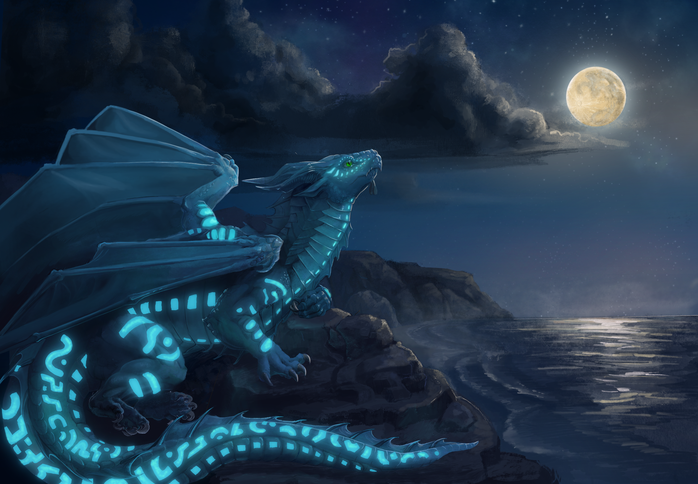

welcome to my little corner
Hey, I'm Julian
I write software, build Minecraft transport networks, make music, and care a lot about dragons.
This is where I keep the things I make and the things that matter to me. Feel free to look around.
A little more about me →
art by mosshotel ↗Currently building: this website.
“I find peace in schedules and chaos in silence.”
Leave a little rawr.
Say hi, leave a thought or tell me how you found this place. I read every message.
Sign the guestbook ↗14 September 2026 — Working on the new website.
I also make electronic music: synths, ambient sounds and things that sometimes resemble a game soundtrack.